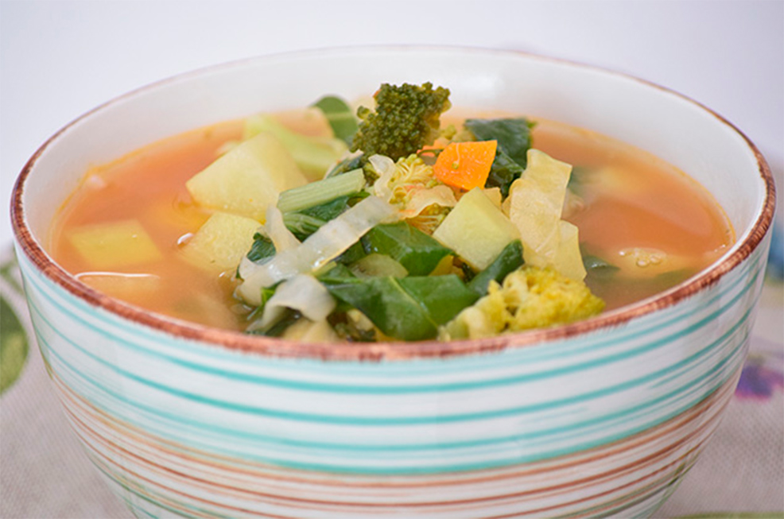

Brócoli, tomate y quínoa. Es la combinación perfecta de sabores y además es muy nutritiva.
1 cucharadita de aceite de coco
1 taza de kale lavada y desinfectada
1/2 taza de zanahoria pelada y cortada en cubitos
1/2 taza de calabacita cortada en cubitos
1/2 taza de col cortada en tiras delgadas
1/2 taza de brócoli cortado en trozos pequeños
1/2 taza de tomate picado sin semilla
1/2 taza de quinoa
5 tazas de agua
2 cucharaditas de sal
1 cucharadita de pimienta molida